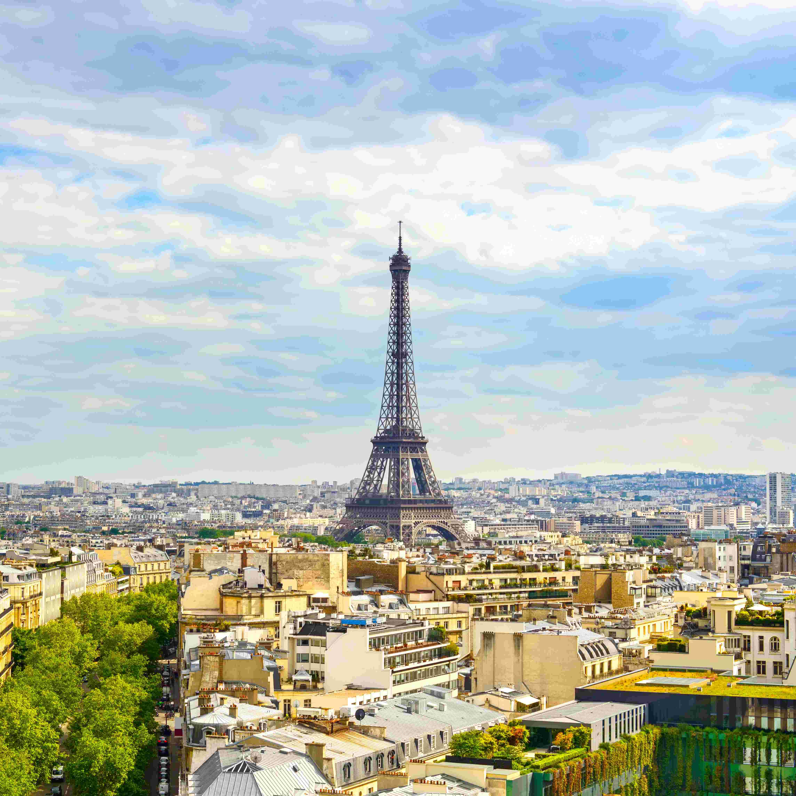
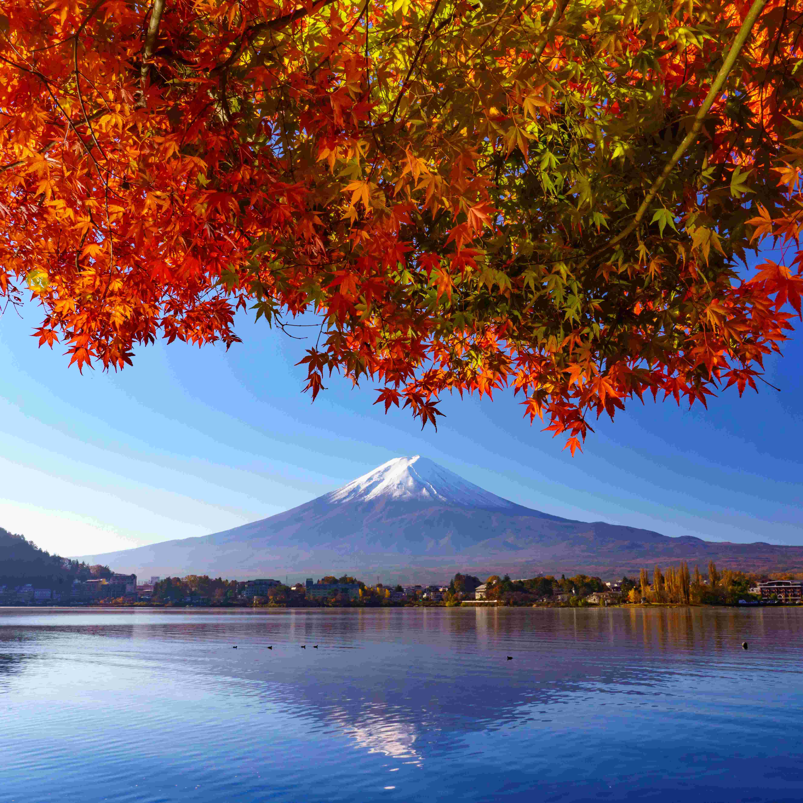

PARIS 🇫🇷Paris offers a unique blend of rich history, world-famous art, and romantic charm, from the iconic Eiffel Tower to the charming streets of Montmartre. It's a city where culture, cuisine, and beauty come together to create an unforgettable travel experience.

JAPON 🇯🇵Japan is a fascinating blend of ancient tradition and cutting-edge modernity, where serene temples and historic villages coexist with bustling cities like Tokyo and Osaka. From cherry blossoms to sushi, it offers a rich cultural experience that’s both peaceful and exhilarating.ITALY 🇮🇹Rome is a captivating city where ancient ruins, like the Colosseum and Roman Forum, stand alongside vibrant piazzas and timeless art. With its rich history, delicious Italian cuisine, and unforgettable atmosphere, Rome offers an immersive journey through the heart of Western civilization.MEXICO 🇲🇽Mexico is a vibrant country full of color, culture, and warmth from ancient ruins and colonial towns to stunning beaches and world-renowned cuisine. Its rich traditions and welcoming spirit make every visit an unforgettable adventure.PERU 🇵🇪Peru is a land of breathtaking landscapes and ancient wonders, home to the iconic Machu Picchu and the rich heritage of the Inca civilization. From the Andes to the Amazon, it offers a truly immersive experience for history lovers, nature seekers, and adventurous souls alike.CHILE 🇨🇱Chile is a country of striking contrasts, stretching from the arid Atacama Desert to the icy glaciers of Patagonia. Its dramatic landscapes, vibrant cities, and rich cultural heritage make it a dream destination for nature lovers and explorers alike.SPAIN 🇪🇸Spain is a lively and diverse country where passionate culture, historic architecture, and world-famous cuisine come together. From the beaches of Costa del Sol to the streets of Barcelona and the flamenco rhythms of Seville, every corner offers something unforgettable.PORTUGAL 🇵🇹 Portugal is a charming country known for its stunning coastline, historic cities, and warm hospitality. From the cobbled streets of Lisbon to the scenic vineyards of the Douro Valley, it offers a perfect mix of relaxation, culture, and adventure.SOUTH KOREA 🇰🇷South Korea is a dynamic destination where ancient palaces and temples meet high-tech cities and vibrant pop culture. From the bustling streets of Seoul to the tranquil beauty of Jeju Island, it offers a unique blend of tradition, innovation, and unforgettable flavors.BRAZIL 🇧🇷Brazil is a land of energy and diversity, where lush rainforests, iconic beaches, and vibrant cities like Rio de Janeiro come alive with music, dance, and color. From the Amazon to Carnaval, it offers an exhilarating experience full of natural beauty and cultural richness.